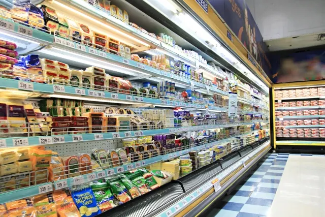

【元人事が解説】スーパーへの就職はブラック？やめとけと言われる理由

「スーパーマーケットはブラックだからやめとけ」
「労働時間が長くて休みが少ない」
「スーパーは学べるものがない」
このような言葉を耳にする人もいるのではないでしょうか。
確かに、小売業は営業時間が長く年中無休の店舗も多いため、こうしたイメージを持っている人も多くいます。
すべてのスーパーがブラックなわけではありません。全国には約2,000社の企業があり、規模によって労働環境は大きく異なるからです。
では、なぜ「ブラック」というイメージを持たれやすいのでしょうか。それには以下の理由があります。
この記事でわかること
- ブラックだと言われる理由
- 仕事内容
- メリット・デメリット
- 身につくスキル
- 向いている人の特徴
- ブラックなスーパーマーケットの見極め方
今回は、チェーンスーパーマーケットを運営している企業の人事担当として、10年間ほど勤務した筆者が「本当にスーパーマーケットはブラックなのか？」を解説します。
スーパーマーケットがブラックだと言われる9つの理由

スーパーマーケットがブラックだと言われる理由は、主に次の9つです。
- 拘束時間が長い
- 残業が多い
- 土日、年末年始、お盆は休めない
- 給料が安い
- 年中求人募集をしている
- クレーム対応がある
- 人間関係でもめることがある
- 商品名や場所を覚えるのが大変
- 身体的負担がきつい
ひとつずつ解説します。
1. 拘束時間が長い
拘束時間が長いのは、スーパーマーケットの人員構成に問題があるからです。
多くの場合人件費を抑えるため、ギリギリの人数で運営しています。
特に小規模の店舗では、パート・アルバイトがほとんどで、社員は店長や部門責任者くらいしかいません。
 まつお
まつおパートやアルバイトは時間の制約がある人が多く、ほとんどが短時間勤務です。
さらに、有給休暇も与えなければならないため、常に人員不足なのです。人数が少ないため、どうしても一人ひとりの負担が大きくなってしまいます。
1日の労働時間は8時間と決まっているため、仮に、23時までの営業だったとしても「早番・遅番」で調整するのが一般的です。
シフト通りに勤務すれば、拘束時間が長くなることはありません。
しかし、時間通りに終わらない場合も多く、筆者が勤務していた店舗は、平均すると社員の拘束時間は10時間でした。
シフトが組めるほどスタッフがいなかったため、社員は開店から閉店まで勤務していたケースも少なくありません。
小規模なスーパーマーケットだと、このようなことが起こりやすい傾向にあります。
2. 残業が多い
スーパーマーケットは、他の企業に比べるとシステム化が遅れている傾向があります。
売上の集計も人の手で数えるのと、機械で数えるのでは作業効率は雲泥の差です。
まつお特に、レジ締め作業は閉店後に行うので、必然的に残業になります。
さらに、抱えている問題は他にもあります。たとえば、以下のようなものです。
- 人手不足による作業効率の低下
- 在庫不足による機会損失
- レジ待ちの行列による顧客満足度の低下
- 万引きによる損失
これらは、システム化やDX化で改善が可能です。
「作業効率を上げて残業を減らす取り組み」を行っているスーパーマーケットも多くあります。
しかし、小規模店舗では投資コストがかかるため、導入できていないケースも多いです。
3. 土日、年末年始、お盆は休めない
スーパーに限らず、サービス業は土日のお客様が多くなります。
休みが全く取れないわけではありませんが、希望日に休めるとは限りません。
中でも、お盆やクリスマス、年末年始は最もお客様が多い時期で、全員出勤しなければならないほど忙しくなります。
一般の人が休んでいる時が稼ぎ時なので、これは業界の特性だといえるでしょう。
4. 給料が安い
一般的に小売業は薄利なため、給料は安い傾向があります。
他業界と比べても、給与水準は決して高くありません。
厚生労働省の資料によると、小売業界の平均年収はボーナスも含めて343万円です。
全ての業界の平均が443万円なので、平均と比べて低いことがわかります。
（参照：厚生労働省｜令和5年賃金構造基本統計調査に関する統計表）
まつおアルバイトの時給も、最低賃金に合わせている企業は少なくありません。
5. 年中求人募集をしている
求人募集はしているものの、なかなか人が集まらない課題を抱えています。
採用できたとしても仕事量に見合った給料に満足せず、やめていく人も多いです。
スーパーマーケットは「きつい」「給料が安い」といったイメージから、慢性的な人手不足に陥っています。
そのため、年中求人募集を出さざるを得ないお店も少なくありません。
実は、これが逆効果なのです。
いつも求人を出しているため「すぐに人がやめる業界」のイメージを持たれています。
6. クレーム対応がある
お客様との直接的な関わりが多いスーパーの仕事では、クレーム対応が避けられません。
商品の品切れや品質、接客態度、レジの待ち時間など、様々な理由でお客様から厳しい言葉を浴びせられることがあります。
中には、理不尽な要求や感情的な怒りをぶつけてくるお客様もおり、対応する従業員の精神的な負担は計り知れません。
特に正社員は店舗の責任者として矢面に立つ場面が多く、ストレスを溜め込みやすいポジションです。
このような精神的な辛さが積み重なり、仕事を続けることが困難になってしまう人もいます。
7. 人間関係でもめることがある
スーパーの職場は、正社員だけでなく、多くのパートやアルバイトで成り立っています。
年齢や経歴、働く目的も様々な人々が集まるため、良好な人間関係を築くのが難しい場合も多いです。
特に若手の正社員が、自分より年上で経験豊富なベテランパートを指導・管理する立場になると、やりにくさを感じることも多いでしょう。
まつお部門間の対立や、スタッフ間のいざこざの仲裁に入るなど、業務以外の気苦労が絶えないことも。
店舗を円滑に運営するための調整役としての役割は、時として大きなストレス源になり得ます。
8. 商品名や場所を覚えるのが大変
一見簡単そうに見えて、実は大きな壁となるのが「商品を覚える」ことです。
スーパーでは数千から数万点もの商品を取り扱っており、さらに新商品や季節商品が絶えず入荷します。
お客様から「〇〇はどこ？」と尋ねられた際に、スムーズに案内できないと不満につながることも多いです。
特に、担当部門以外の商品の場所まで把握するのは楽ではありません。
また、特売や季節に合わせて頻繁に売場のレイアウトが変わるため、その都度覚え直す必要があります。
この地道で終わりのない暗記作業が、入社して間もない頃の大きな負担になるという人も少なくありません。
9. 身体的負担がきつい
スーパーマーケットの仕事は、基本的に体力勝負です。
レジ業務や品出し、惣菜の調理など、ほとんどの業務で一日中立ちっぱなしの状態が続きます。
そのため、足や腰に大きな負担がかかり、慢性的な腰痛に悩まされる従業員は後を絶ちません。
さらに、飲料のケースやお米の袋、野菜の段ボールなど、重量物を運ぶ力仕事も日常的に発生します。
特に精肉や鮮魚部門では、低温の作業場で重い食材を扱うなど、身体への負荷は相当なものです。
こうした日々の身体的な疲労の蓄積が、仕事を続ける上での大きな障壁となっています。
スーパーマーケットの仕事内容
スーパーマーケットの仕事は、一見するとレジ打ちや品出しが中心に見えるかもしれません。
しかし、実は多くの部門があります。
お客様が毎日安心して買い物できるよう、各部門が専門性を活かし、連携しながら運営されています。
ここでは、主な部門とその仕事内容について詳しく見ていきましょう。
- レジ部門
- 加食雑貨部門（グロッサリー部門）
- 日配食品部門（デイリー食品部門）
- 精肉部門
- 鮮魚部門
- 青果部門
- 惣菜部門
- ベーカリー部門
- 品出し業務
- 棚卸し業務
順番に見ていきましょう。
レジ部門
レジ部門は、お客様が最後に接する「お店の顔」とも言える重要なポジションです。
主な業務は商品のスキャンと会計ですが、それだけではありません。
ポイントカードの案内や商品券の処理、袋詰め、さらにはお客様からの簡単な質問やクレームの一次対応まで、役割は多いです。
常に正確さとスピードが求められると同時に、お客様に気持ちよく買い物してもらうための笑顔や丁寧な接客スキルが欠かせません。
多くのスーパーでは自動釣銭機やセルフレジが導入されていますが、キャッシュレス決済など覚えることも多く、店の印象を左右する責任のある仕事と言えます。
加食雑貨部門（グロッサリー部門）
グロッサリー部門は、お菓子や調味料、缶詰、飲料、お酒、日用雑貨など、常温で保存できる商品を幅広く担当します。
スーパーの中で最も商品数が多く、発注や在庫管理、品出し、売場作りが主な業務です。
次々と発売される新商品や季節限定品に合わせて棚を入れ替えたり、関連する商品を近くに陳列する「関連販売」を企画したりと、マーケティングの視点が活かせる部門でもあります。
お客様から商品の場所を尋ねられることも非常に多いため、膨大な商品知識を身につける必要があります。
日配食品部門（デイリー食品部門）
日配食品部門は、牛乳やヨーグルト、豆腐、パン、麺類など、毎日納品される賞味期限の短い商品を扱います。
この部門で最も重要な業務は、なんと言っても「日付管理」です。
賞味期限が一日でも過ぎた商品は販売できないため、古い商品を前に、新しい商品を後ろに並べる「先入れ先出し」を徹底しなければなりません。
発注量の見極めもシビアで、欠品させず、かつ廃棄（ロス）を最小限に抑える管理能力が求められます。
冷蔵ケースでの作業が中心となるため、寒さに強いことも必要です。
精肉部門
精肉部門の仕事は、塊（ブロック）で仕入れた肉を、家庭で調理しやすいように加工して商品化することです。
スライサーという専門の機械を使って薄切りにしたり、包丁でステーキ用にカットしたり、ミンチ機でひき肉を作ったりと、専門的な技術が求められます。
肉の種類や部位ごとの特徴を理解し、お客様に美味しい食べ方を提案することも大切な業務のひとつです。
また、刃物や機械を扱うため常に安全への配慮が必要な上、食中毒などを防ぐための徹底した衛生管理も必要となります。
専門スキルが身につき、手に職をつけたい人にはやりがいのある部門です。
鮮魚部門
鮮魚部門は、市場で買い付けた新鮮な魚をさばき、刺身や切り身、お寿司などに加工して販売する部門です。
魚を一匹丸ごとさばく「三枚おろし」などの調理技術はもちろん、旬の魚の知識や鮮度の見極め方といった専門性が求められます。
お客様の要望に応じて調理方法をアドバイスしたり、注文を受けてから魚をさばいたりする対面販売も重要な仕事です。
魚特有の匂いや、常に低温に保たれている作業場での業務になるため、体力や環境への適応力も必要になります。
まさに「職人技」が光る、スーパーの花形部門のひとつと言えるでしょう。
青果部門
青果部門は、野菜や果物といったデリケートな商品を扱う部門です。
主な仕事は、入荷した商品の鮮度チェック、傷んだ部分を取り除く「見切り」作業、袋詰めやパック詰め、カットフルーツの作成などがあります。
特に野菜や果物は鮮度が命なので、いかに美味しそうな状態でお客様に提供できるかが腕の見せ所です。
重い野菜の段ボールを運ぶ力仕事も多く、体力も必要とされます。
また、季節ごとに変わる旬の野菜や果物の知識を活かして、彩り豊かな魅力ある売場作りも、売上を左右する重要なスキルです。
惣菜部門
惣菜部門は、お弁当や揚げ物、サラダなど、店内で調理した商品を販売する部門です。
スーパーの「第二の食卓」として、地域の食生活を支える重要な役割を担っていると言っても良いでしょう。
実際の業務では、マニュアルに沿った調理が中心ですが、揚げ物、焼き物、煮物、米飯など、幅広い調理工程に関わります。
ランチタイムや夕方のピーク時に合わせて、出来立ての商品を提供するための計画性が求められる仕事です。
また、直接お客様の口に入るものを作るため、全部門の中でも特に厳しい衛生管理基準が設けられており、清潔さと正確さが強く要求されます。
ベーカリー部門
スーパーマーケットによっては、店内にベーカリー部門を設けて、焼きたてのパンや焼き菓子を提供しています。
インストアベーカリーとも呼ばれる、店内でパンを製造・販売する部門です。
焼きたてのパンの香りは集客効果も高く、お店の大きな目玉となります。
業務では、生地の仕込み（ミキシング）から、分割・成形、発酵、焼成（窯で焼くこと）、そして陳列・販売まで、パン作りの全工程に携わります。
パンの種類ごとにレシピや工程が異なるため、専門的な知識と技術が身につくのが特徴です。
多くの場合、開店時間に焼きたてのパンを並べるため、早朝からの勤務となりますが、パン作りが好きな人にとっては非常にやりがいのある仕事でしょう。
品出し業務
品出しは、バックヤードに保管されている商品を、売場の棚に補充していくスーパーの基本的な仕事です。
お客様がいつでも快適に買い物ができるよう、欠品がない状態を維持しなければなりません。
まつお単純な作業に見えますが、ただ商品を並べるだけではないのです。
お客様が手に取りやすいように商品の向きを揃えてきれいに並べる「前進立体陳列」や、賞味期限の古いものを手前に置く「先入れ先出し」といったルールを徹底する必要があります。
早朝の開店前や日中など、様々な時間帯で行われる、すべての部門に関わる重要な業務です。
棚卸し業務
棚卸しとは、店舗にあるすべての商品の在庫数を数え、データ上の在庫と実際の在庫に差異がないかを確認する作業です。
この作業によって、万引きなどによるロス（損失）や、発注ミスなどを正確に把握し、店の利益を確定させます。
通常、閉店後の深夜から早朝にかけてや、店舗を一日休業にして全従業員で行うことが多く、年に数回実施されます。
専用の端末（ハンディターミナル）で商品のバーコードを一つひとつスキャンしていく、非常に地道で根気のいる作業ですが、店舗の健全な運営のためには絶対に欠かせない重要な業務です。
スーパーマーケットはきついがメリットもある
スーパーマーケットの仕事には「きつい」「大変」といった側面があるのは事実ですが、それだけではありません。
実は、働く上で得られる多くのメリットや、やりがいも存在します。
ここでは、スーパーマーケットで働く魅力について詳しく見ていきましょう。
- お客様との接客
- 商品は配置を覚えてしまえば楽
- 社員割引で安く購入できる
- トレンド商品がわかる
- 新商品がいち早く手に入る
- 不況に強い
- 料理が上手になる
- 未経験でも挑戦しやすい
- ライフスタイルに合わせて働きやすい
それぞれ解説します。
お客様との接客
スーパーマーケットで働く大きなやりがいのひとつが、お客様とのコミュニケーションです。
お客様から「いつもありがとう」「この前おすすめしてくれた商品、美味しかったよ」といった感謝の言葉をかけてもらえることは、仕事のモチベーションに直結します。
地域に住む人々の食生活を支えているという実感は、他の仕事では得難い喜びでしょう。
人と接することが好きな人にとっては、日々の何気ない会話が楽しみとなり、仕事の厳しさを乗り越える力になります。
地域社会に貢献していると感じられる点は、この仕事の大きな魅力です。
商品は配置を覚えてしまえば楽
最初は商品の種類や陳列場所を覚えるのが大変だと感じるかもしれません。
しかし、一度慣れてしまえば、その後は比較的スムーズに業務をこなせるようになります。
また、品出し作業の効率も格段に上がり、時間に余裕が生まれるでしょう。
売場の配置やバックヤードのどこに何があるかを頭に入れておけば、お客様からの問い合わせにも即座に答えられます。
慣れてしまえばルーティンワークとしてこなせる部分も多く、安心して働き続けられる要素のひとつとなるでしょう。
社員割引で安く購入できる
多くのスーパーマーケットでは、従業員向けに「社員割引」制度を設けています。
自社の商品を通常価格よりも安く購入できるのは、非常に嬉しいメリットです。
毎日利用する食料品や日用品が割引価格で手に入るため、家計の節約になります。
特に食費は生活費の中でも大きな割合を占めるので、この割引制度は従業員にとって魅力的と言えるでしょう。
トレンド商品がわかる
スーパーの売場は、世の中の食のトレンドを映す鏡のような場所です。
働きながら、今どんな商品が人気なのか、テレビやSNSで話題の調味料は何かといった情報をいち早くキャッチできます。
メーカーから提供される新商品の情報に触れたり、バイヤーがどのような視点で商品を仕入れているのかを知る機会も少なくありません。
こうした情報は、自身の食生活を豊かにするだけでなく、マーケティングの知識としても役立ちます。
仕事を通じて食品のトレンド情報に詳しくなれるのは、大きな魅力と言えるでしょう。
新商品がいち早く手に入る
新しいもの好きにはたまらないメリットが、話題の新商品を誰よりも早く手に入れられることです。
多くの新商品は発売日に店舗の棚に並ぶため、仕事帰りにすぐに購入できます。
人気のあまり品薄になってしまうようなお菓子や、期間限定のアイスクリームなども、入荷情報をいち早く入手できるため、買い逃す心配がありません。
まつお店舗によっては、従業員向けに新商品の試食会が開かれることもあります。
世間で話題になる前の商品をいち早くチェックできる楽しみは、スーパーで働くからこその特権と言えるでしょう。
不況に強い
スーパーマーケット業界の強みは、景気の波に左右されにくい安定性です。
食料品や日用品は生活に不可欠なものであり、どんなに景気が悪化しても需要が完全になくなることはありません。
事実、コロナ禍においても「エッセンシャルワーカー」として社会インフラを支え、その重要性が再認識されました。
むしろ、外食を控えて家庭で食事をする「内食需要」が高まることで、スーパーの売上は堅調に推移する傾向さえあります。
長期的に安定した職場で働きたい、雇用の安定性を重視するという人にとって、不況に強いスーパー業界は非常に魅力的な選択肢でしょう。
料理が上手になる
スーパーマーケットの仕事は、間接的に料理のスキルアップにもつながります。
鮮魚や精肉部門で働く場合は、食材の目利きや下処理の方法を直接学べ、青果部門では旬の野菜や果物の見分け方や保存方法に詳しくなります。
また、惣菜部門ではプロの調理技術を間近で見ることができ、他の部門でも様々な食材に触れるので、自然と料理に関する知識が豊富になるでしょう。
日々の業務を通じて、自分の料理の腕を磨けるのは嬉しいメリットです。
料理が好きな方はもちろん、これから料理を始めたいという方にとっても、学びの多い職場環境と言えます。
未経験でも挑戦しやすい
スーパーマーケットの仕事は、特別な資格や専門的な経験を必要としないため、未経験からでも挑戦しやすい業界です。
多くの企業では、入社後の研修やOJTの制度が整っており、基本的な業務から着実に学べます。
レジ、品出し、惣菜調理など、部門ごとに業務内容が明確に分かれているため、自分に合った仕事を見つけやすいのも特徴です。
パートやアルバイトとして経験を積み、実力が認められれば正社員へ登用される制度がある企業も少なくありません。
キャリアチェンジを考えている人や、社会人経験の少ない人にとっても門戸が広い業界です。
ライフスタイルに合わせて働きやすい
スーパーマーケットは営業時間が長く、早朝から深夜まで様々な時間帯でシフトが組まれています。
そのため、自分のライフスタイルに合わせて働きやすいメリットがあります。
特にパートやアルバイトの場合「午前中だけ」とか「子どもの学校行事がある日は休む」あるいは「授業後の夕方から」といった柔軟な働き方が可能です。
扶養内で働きたい主婦（主夫）や、学業と両立したい学生、ダブルワークをしたいフリーターなど、さまざまな人にとって働きやすいでしょう。
自分の時間を大切にしながら働きたい方にとって、勤務時間や日数の選択肢が多いことは大きな魅力です。
スーパーマーケットはやめとけと言われるデメリット
スーパーマーケットで働くことには多くのメリットがある一方で、「やめとけ」と言われるようなデメリットもあります。
就職や転職を考える際には、こうしたネガティブな側面もしっかりと理解しておくことが重要です。
ここでは、特に多くの人が感じるデメリットについて具体的に解説します。
- 力仕事が多い
- 立ちっぱなし
- 朝が早い
- 正社員はなかなか休めない
一つずつ見ていきましょう。
力仕事が多い
スーパーマーケットの仕事は、想像以上に体力勝負な場面が多いです。
例えば、飲料コーナーでは2Lペットボトル6本入りのケース（約12kg）を何十箱も運んだり、お米売場では10kgの米袋を積み上げたりと、日常的に重量物を扱います。
青果部門でも、野菜が詰まった重い段ボールを運ぶのは当たり前。
こうした力仕事は特定の部門に限らず、品出し担当者なら誰もが経験することです。
体力に自信がない方や、腰に持病がある人にとっては、こうした身体的な負担が仕事を続ける上での大きな障壁となる可能性があります。
立ちっぱなし
レジ打ちや品出し、接客、売場整理など、スーパーマーケットのほとんどの業務は立ち仕事です。
休憩時間以外は、営業時間中ずっと立ちっぱなしの状態が続くため、足腰に大きな負担がかかります。
特に長時間の立ち仕事は、足のむくみや疲労、腰痛の原因となることも少なくありません。
まつお私も「夕方には足がパンパンになる」といった声をよく聞いていました。
フットワークの軽さが求められる一方で、身体的な負担は避けて通れないデメリットのひとつと言えるでしょう。
朝が早い
スーパーマーケットの一日は、お客様が来店するずっと前から始まっています。
特に開店準備を担当する早番シフトの場合、勤務開始時間は非常に早いです。
店舗によっては朝の7時、あるいは6時から業務がスタートすることも珍しくありません。
開店時間までに大量の商品を棚に並べ、惣菜を調理し、清掃を済ませるなど、やるべきことは山積みです。
そのため、通勤時間も考慮すると、まだ暗い早朝に起きる生活が必須となります。
朝が苦手な方にとっては、早起きが毎日続くことが大きなストレスになるかもしれません。
正社員はなかなか休めない
パートやアルバイトは比較的シフトの融通が利きやすいですが、正社員となると話は別です。
店舗運営の責任を担う立場として、土日祝日や年末年始、お盆といった繁忙期に休むことは基本的にできません。
さらに、パート従業員の急な欠勤やトラブルが発生した際には、たとえ休日であっても急遽出勤を要請されることもあります。
そのため、プライベートの予定を立てにくく、友人や家族と休みを合わせるのが難しいという悩みを抱える正社員が多いです。
ワークライフバランスを重視する方にとっては、大きなデメリットと感じるかもしれません。
スーパーマーケットの正社員になれば身につくスキル
スーパーマーケットの正社員として働くことは、単に商品を販売するだけでなく、多様なビジネススキルを習得できる貴重な機会です。
厳しい面もありますが、日々の業務を通じて得られる経験は、あなたのキャリアにとって大きな財産となるでしょう。
ここでは、具体的にどのようなスキルが身につくのかを解説します。
- 接客スキル
- マネジメントスキル
- マーケティングスキル
- 精肉、青果などの専門スキル
順番に解説します。
接客スキル
スーパーマーケットでは、毎日多くのお客様と接するため、自然と高い接客スキルが身につきます。
商品の場所を案内したり、おすすめ商品を提案したり、時にはクレーム対応をしたりと、様々なお客様のニーズに応える経験を積めます。
笑顔での応対はもちろん、お客様の言葉の裏にある意図を察する力や、分かりやすく説明する表現力、困っているお客様に寄り添う共感力など、接客を通じて人間関係を円滑にするためのコミュニケーション能力が磨かれます。
これは、どの業界においても重宝される普遍的なスキルと言えるでしょう。
マネジメントスキル
正社員は、自分が担当する部門の「小さな経営者」のような存在です。
多くのパートやアルバイトスタッフをまとめ、目標達成に導くマネジメントスキルが求められます。
例えば、スタッフのシフトを作成・管理し、日々の業務を的確に指示する能力です。
さらには、新人スタッフを指導・育成し、チーム全体のモチベーションを高めるリーダーシップも欠かせません。
年齢も経験も異なる多様なメンバーをひとつのチームとして機能させる経験は、将来的に店長などの管理職を目指す上で非常に貴重な財産となります。
マーケティングスキル
スーパーの仕事は、実はマーケティング活動の連続です。
商品を並べるにあたっても「どうすればお客様の購買意欲を高められるか」を常に考えています。
例えば、POSデータ（販売実績データ）を分析して売れ筋商品を見極め、効果的な発注計画を立てること。
季節のイベントに合わせて魅力的な売場を作り、手書きのPOPで商品の良さを伝えること。
まつおこれらは全て、データ分析に基づいた実践的なマーケティングスキルです。
日々の業務を通して、消費者のニーズを掴み、売上につなげる力を習得できます。
精肉、青果などの専門スキル
特定の部門に配属された場合、その分野の専門的な知識や技術を深く習得できます。
例えば、精肉部門であれば肉の部位ごとの特徴やカット技術、鮮魚部門であれば魚の目利きや捌き方、青果部門であれば野菜や果物の旬、保存方法、鮮度保持の知識などです。
これらのスキルは、食に関する深い専門性として、キャリアを積む上で大きな強みとなります。
また、食の安全や衛生管理に関する知識も必然的に身につくため、食のプロフェッショナルとしての自信にも繋がるでしょう
スーパーマーケットに向いている人の特徴
スーパーマーケットの仕事は、向き不向きがはっきりと分かれる職種かもしれません。
しかし、特定の特性やスキルを持つ人にとっては、非常にやりがいを感じられる職場です。
ここでは、スーパーマーケットで働くことに向いている人の主な特徴を3つ紹介します。
- 人と接することが好き
- キビキビ動ける人
- 細かい作業が正確にできる人
いずれかに当てはまっている人は、向いていると言えるでしょう。
人と接することが好き
スーパーマーケットで働く上で、最も大切な資質の一つが「人と接することが好き」という気持ちです。
この仕事は、毎日たくさんのお客様と直接コミュニケーションをとる機会にあふれています。
例えば、商品の場所をご案内したり、おすすめの食材についてお話ししたり、レジで会計をしながら何気ない会話を交わしたり。
常連のお客様に顔を覚えてもらい「いつもありがとう」と声をかけてもらえることは、何よりのやりがいになるでしょう。
お客様の役に立ちたい、喜んでもらいたいという気持ちがある人なら、日々の業務を楽しみながら、モチベーション高く働き続けることができるはずです。
キビキビ動ける人
スーパーの店内は、常に活気があり、従業員は効率的に動くことが欠かせません。
そのため、じっとしているよりも体を動かしている方が好きで、テキパキと行動できる人はこの仕事に非常に向いています。
例えば、お客様が通る通路を塞がないように素早く品出しをしたり、レジに行列ができた際にスピーディーに応援に入ったりと、常に周囲の状況を判断して動く瞬発力が重要です。
また、バックヤードから売場へ商品を運んだり、広い店内を歩き回ったりと、一日を通しての運動量もかなり多くなります。
体力に自信があり、フットワークの軽さを活かしたい人にとっては、まさに最適な職場環境と言えるでしょう。
細かい作業が正確にできる人
スーパーマーケットの仕事には、一見地味に見えても非常に重要な細かい作業が多く含まれています。
例えば、商品の賞味期限チェック、POPの作成と貼り付け、商品の値札変更、レジでの正確な金銭授受、そして棚卸しでの正確なカウントなどです。
これらの作業を一つひとつ丁寧かつ正確にこなすことは、商品の品質管理、売上管理、ひいてはお客様からの信頼を得る上で欠かせません。
几帳面で、細部にまで気を配れる性格の人は、ミスなく業務を進められるため、スーパーマーケットで大きな力を発揮できるでしょう。
スーパーマーケットはブラックだと言われるが企業努力はすすんでいる
近年はどの業界でも働き方改革が行われ、ずいぶん労働環境も変化しています。もちろん、スーパーマーケットも例外ではありません。
思うようにシステム化が進んでいない業界ですが、従業員の負担を減らす努力は、どのスーパーマーケットも行っています。
次のような企業努力が代表的です。
- 労働時間を減らすために、営業時間を短縮する。
- 休みを取れるように、定休日を設ける。
- 朝の品出しや棚卸しは、専門業者に委託する。
まつおワークライフバランスの取り方はどの企業でも課題となっています。
ブラックなスーパーマーケットを見極めるには

ブラックなスーパーに入社しないためにも見極めが必要です。ブラックスーパー見極めのコツは次の2つがあります。
- ネットの情報だけを鵜呑みにしない
- 実際に自分の目と耳で確かめる
それぞれ見ていきましょう。
1. ネットの情報だけを鵜呑みにしない
見るべきポイントは、記事や口コミの信ぴょう性です。
「書いた人はどれくらいの業界歴があるのか」「書き込んだ人のいたスーパーの規模」などは見るべきポイントです。
「半年くらいしか勤務していない人」と「数年勤務した人」では、経験値が違います。
規模の大きさも大切です。大手企業と中小や個人スーパーでは、労働環境が大きく異なるのが一般的です。
大手チェーンの方が、福利厚生や従業員教育、労働時間などは待遇が良い傾向があります。
まつおネットで悪い口コミをしている人は、環境の悪い企業に勤務していたケースも多いです。
さらに、誇張して書いている場合も多いため、全てを鵜呑みにせず参考程度にすると良いでしょう。
2. 実際に自分の目と耳で確かめる
自分の目で実際にスーパーを見てみるのが一番です。
見る時間帯や曜日によって忙しさも変わるため、平日の夕方や休日の昼間など、あえて時間を変えて複数回足を運んでみましょう。
従業員の表情や店内の活気など、ネットの情報だけではわからないリアルな実態を把握できます。
お店の人に就活生であることを伝えれば、詳しい話を聞けることも多いです。
実際に現場で働いている人に話を聞くとより理解が深まるので、ぜひ聞いてみてください。
スーパーマーケットはブラックと言われてもいろんなことが学べる

スーパーでの業務は、接客はもちろん、マーケティングやビジネスの基本である数値管理（人員管理、売上管理、販売予測）などが学べる仕事です。
主な仕事内容は、次のようなものがあります。
- 店舗での販売
- バックオフィス業務や広告などの販売促進
- 主に仕入れを担当するバイヤー
- お肉やお魚、野菜などを扱う生鮮部門
- お惣菜やお弁当を扱うデリカ部門
- インストアベーカリー（焼き立てパン）
このように、経験できる仕事がたくさんあります。
また、社内はもちろん取引業者やお客様、パート・アルバイト、外国人留学生など老若男女問わず、多種多様な人と関われる業種です。
立ちっぱなしのため、肉体的にもきつい仕事ではありますが、学べることがたくさんあります。
数値管理やパート・アルバイトのマネジメント経験などは、他の職種でも活かせるので身につけていても損はありません。
興味がある人は、ぜひチャレンジしてみてください。
スーパーマーケット業界に興味がある人は、UZUZの利用がおすすめです。
UZUZでは、就活をマンツーマンで徹底サポートしてくれます。
ES添削や面接指導も無料で受けられるので、登録してさっそくサポートしてもらいましょう。
採用・人事やAI活用のご相談を受け付けています
AI研修、AI導入支援、採用支援、記事の執筆など、まずはお気軽にご相談ください。
ご相談はこちら